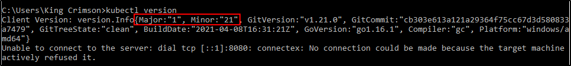

Demo Minikube
Un primo passo prima di utilizzare Minikube,
bisogna installare Kubectl: lo useremo
per amministrare i cluster dopo l'installazione.
https://kubernetes.io/docs/tasks/tools/
NB: Possiamo aggiungerlo alla PATH del nostro OS, seguendo la giuda in allegato PDF.
In questo modo possiamo chiamarlo ovunque nel terminale!
Possiamo vedere la versione di kubectl con "kubectl version":
La nostra è la 1.21

Ora, per installare Minikube, dobbiamo controllare la virtualizzazione
del nostro computer (deve essere abilitata)
https://minikube.sigs.k8s.io/docs/start/
Per Windows, basta usare il comadon "systeminfo"
e cercare la linea riguardo la Virtualizzazione:

Ora i passi di installazione sono questi:- Avere Kubectl (già fatto)
- Avere un VM Manager (come VirtualBox, VMWare, KVM, virt-manager etc.)
- Alternativa a sopra: se hai già Docker!
Per di base, usiamo semplicemente VirtualBox:
basta installarlo sulla nostra macchina.
Con Minikube possiamo scegliere di creare una VM,
dove far girare il nostro cluster.
Ora possiamo finalmente scaricare Minikube ed installarlo!
Una volta installato e tutto, avremo una utility da command line.
Per installare il nostro cluster, dobbiamo usare il comando adatto
per il nostro tipo di driver (nel nostro caso, VirtualBox)
https://minikube.sigs.k8s.io/docs/drivers/

Il processo di installazione è questo:- Scarica una ISO
- Questa ISO sarà usata per la VM
- Scarica Kubernetes e Docker
Una volta finita l'installazione, avremo una VM running su VirtualBox!

Ora per controllare il nosto cluster,
possiamo usare il comando "minikube status":

Con kubectl possiamo ottenere tutti i nodi
e sapere il loro stato e ruolo:

Ora testiamo con un applicativo di prova:
NB: Trovi tutto qui https://minikube.sigs.k8s.io/docs/start/

Ora possiamo ottenere i deployments con kubectl get deployments:

Possiamo esporre il deployment:

Chiediamo per il servizio a kubectl:

Chiediamo per l'url del servizio:

Infine, cancelliamo i servizi ed il deployment: